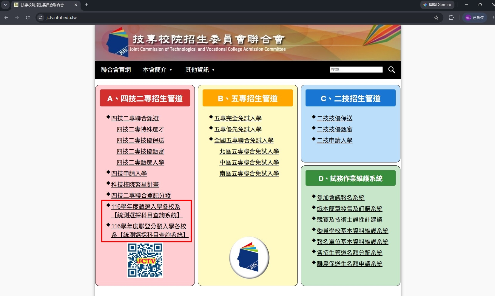

116學年度起，四技二專考招制度將賦予學生更高彈性，調整重點包含：
統測科目自主選考：考生可依個人興趣與目標校系，自主選擇應試科目。報考單群類考生至少選考2科（須含專業科目1科）；報考跨群類考生則至少選考3科（專業科目二為必考）。
招生採計科目調整：為減輕學生負擔，甄選入學第一階段參採科目數調整為「1至4科」；聯合登記分發則調整為「2至5科」。
納入APCS超額篩選：資訊及電資相關系將「大學程式設計先修檢測（APCS）」納入甄選入學第一階段的超額篩選，提供具程式設計專長的學生能有更多機會升學技專校院。
技能競賽優待調整：增列全國技能競賽「青少年組」獲獎者的優待加分比率，區隔相同賽事不同組別強度，發揮實務選才精神。
統測選採科目查詢系統
https://www.jctv.ntut.edu.tw/
